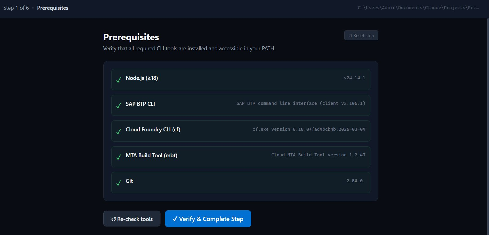
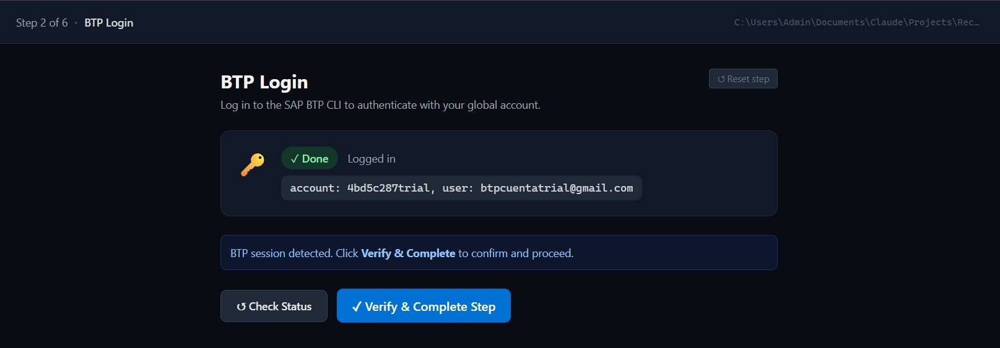
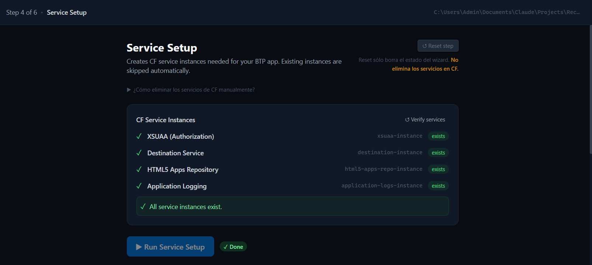
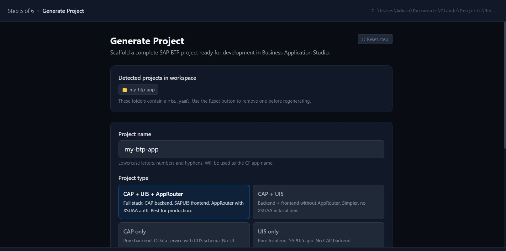
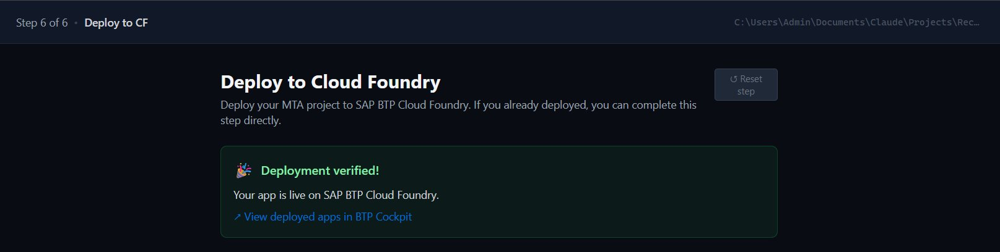

Wizard local + CLI que verifica dependencias, guía el login, crea servicios CF, genera tu proyecto CAP + SAPUI5 + AppRouter y aplica fixes automáticos antes del deploy.
6 pasos guiados con estado persistente, reset por paso y terminal integrada.
Capturas reales del wizard corriendo en entorno local. Cada paso muestra el estado del sistema antes de avanzar al siguiente.





BTP Starter Pack habla directo a quien escribe el código y a quien decide cuándo hay que entregar.
La configuración inicial de un entorno SAP BTP Cloud Foundry implica instalar herramientas, autenticarse con SSO, crear servicios en orden y lidiar con bugs que SAP no documenta claramente.
grant_type: missing por AppRouter bindeado al plan incorrectonpm ci rompe el build de MBT en ciertos entornosmta.yaml que detienen el deploy| Acción | Estado |
|---|---|
| Verificar dependencias locales | ✅ Auto |
| Login BTP CLI + CF CLI | ⚠ Semi (OIDC SAP) |
| Crear servicios CF | ✅ Auto |
| Generar proyecto CAP + UI5 | ✅ Auto |
| Build + Deploy con auto-repair | ✅ Auto |
| Suscribir BAS · Asignar roles | ⛔ Manual (SAP Trial) |
Una sola herramienta cubre el wizard de configuración, generación del proyecto y deploy. Más dos manuales detallados para entender cada paso.
mta.yaml: plan incorrecto del AppRouter, npm-ci, xsuaa-deployer y dependencias circulares.doctor, init, login, setup, generate-project, deploy. Integrable en CI/CD.mta.yaml, xs-security.json, estructura de carpetas y scripts de build.No es una solución enterprise final. Es un acelerador de arranque para quienes necesitan levantar una base BTP sin perder tiempo en configuración inicial.
La herramienta y los dos manuales cubren tanto el camino rápido como el de aprendizaje profundo.
Cloná el repositorio, instalá las dependencias, compilá y abrí el wizard. Todo lo demás lo hace la herramienta.
¿Faltan herramientas? El comando doctor --fix te guía para instalar cada una.
La herramienta es open source y gratuita. Si necesitás convertir esa base en una solución productiva — landscape multi-env, integraciones, capacitación de equipos — podemos trabajar juntos.
La herramienta te da la base técnica. Yo te puedo ayudar a convertirla en una solución productiva para tu equipo o cliente.
Toda la información de los manuales y el comportamiento de la herramienta fue verificado contra fuentes primarias de SAP. Sin wikis de terceros ni blogs desactualizados.